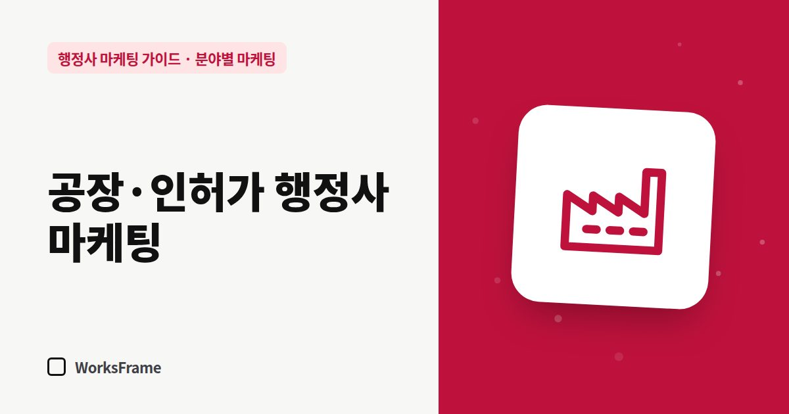

분야별 마케팅
공장·인허가 행정사 마케팅 — 기업 고객은 이렇게 찾습니다
한 줄 답
기업 담당자는 여러 사무소를 비교한 뒤 윗사람에게 보고합니다. 업무별 절차, 회사가 준비할 것, 예상 기간, 견적 방식을 보고 자료처럼 정리해 두세요.

공장등록, 공장설립 승인, 개발행위 허가, 각종 영업 인허가는 한 건의 규모가 크고, 고객이 개인이 아니라 회사인 경우가 많습니다. 회사 담당자가 사무소를 고르는 방식은 개인 고객과 다릅니다.
기업 담당자는 이렇게 고릅니다
- 검색 — “○○시 공장등록 대행”, “공장설립 승인 절차”
- 비교 — 홈페이지 두세 곳을 열어 업무 범위와 진행 방식 확인
- 확인 — 대표 행정사, 사무소 주소, 비슷한 업무 경험
- 내부 보고 — 상사에게 “이 사무소가 이렇게 진행한답니다”라고 설명할 자료
그래서 기업 고객을 위한 홈페이지는 설명하기 쉬운 자료가 되어야 합니다.
홈페이지에 필요한 것
| 필요한 것 | 이유 |
|---|---|
| 업무별 절차도 | 담당자가 내부 보고에 그대로 쓸 수 있게 |
| 필요한 서류와 회사가 준비할 것 | 업무 분담이 명확해야 결정이 빠름 |
| 예상 기간과 변수 | 공장 가동 일정과 직결 |
| 진행 중 소통 방식 | 단계별 보고 여부 |
| 견적 방식 | 세금계산서 발행, 계약 조건 |
어디서 알려야 하나
- 네이버 검색 — 업무 안내 페이지와 블로그 글 (업무 안내 쓰는 법)
- 구글 검색 — 외국계·대기업 협력사 담당자
- 협업 네트워크 — 공인중개사(공장 임대·매매), 건축사·설계사무소, 세무사 (네트워크 관리)
- 산업단지·지역 기업 모임 — 직접 만나는 관계
기업 고객에게 통하는 글
- “공장 임대차 전에 확인할 인허가 체크리스트”
- “공장등록이 늦어지는 흔한 이유 5가지”
- “개발행위 허가, 설계 전에 확인할 것”
기업 담당자의 걱정은 일정 지연과 추가 비용입니다. 그 걱정에 답하는 글이 문의로 이어집니다.
자주 묻는 질문
지역을 넘어 전국 기업을 받을 수 있을까요?
현장 확인이 필요한 업무는 지역성이 강합니다. 먼저 사무소 주변 산업단지와 시·군을 중심으로 알리고, 비대면이 가능한 업무부터 넓혀 가세요.
기업 고객은 가격을 많이 비교하나요?
비교는 하지만, 일정과 책임 있는 진행을 더 중요하게 보는 경우가 많습니다. 진행 방식과 소통을 구체적으로 보여 주세요.